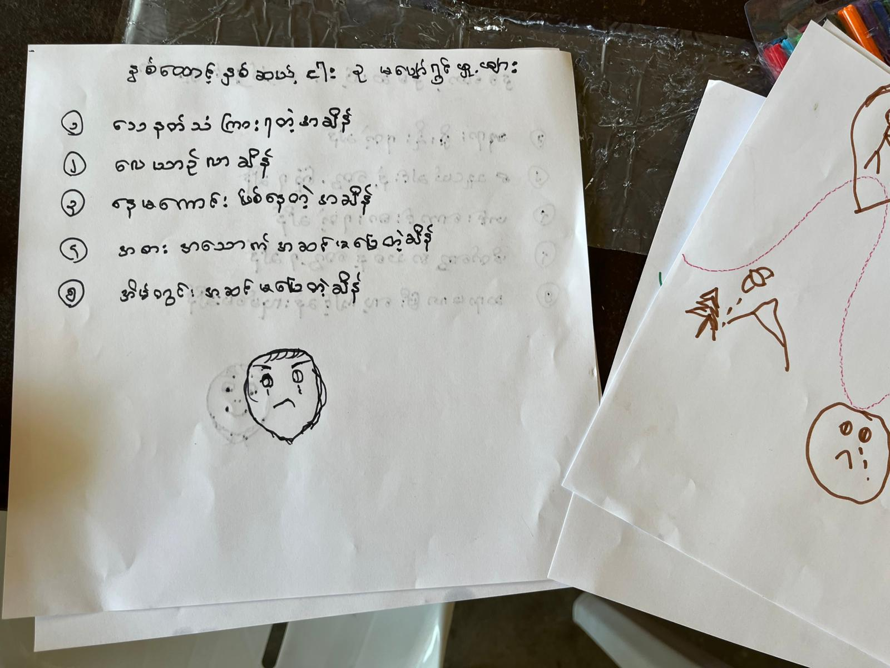

Written by another child living in a Karenni IDP camp, this letter offers a glimpse into everyday life for young people growing up during conflict. Like many children’s writings, it combines simple language with expressions of gratitude and hope.
Within the archive, the letter reinforces a recurring theme.

Method: OCR / handwritten text analysis and translation analysis
This artifact was compared across Tesseract, Gemini 2.5 Flash, Gemini 3.1 Pro Preview, and Gemini 3.1 Pro Preview with forced Burmese. Analysis included pairwise disagreement and consensus transcription review.
This artifact was also included in the Burmese → English → Burmese → English distortion pipeline. See consolidated results in the AI Analysis section.
Resilience is not limited to soldiers or humanitarian workers, but is also present in the voices of children adapting to extraordinary conditions.